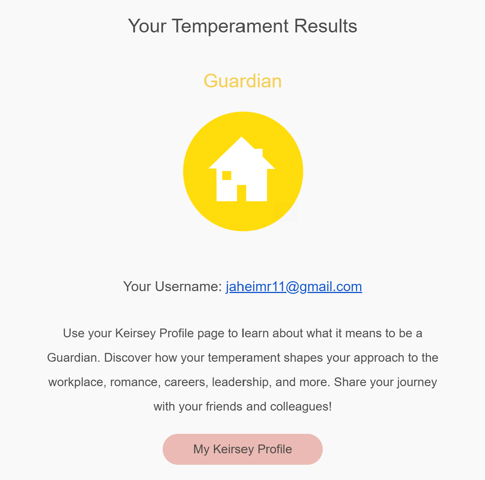

School lifePersonality Traits: Being a introvered pereson defnitely influences how I engage in the classroom and interact with peers. Being introverted means prefering quiet study environments. Also possess traits like motivation, determination, and resilience which helps with my ability to stay focused, set goals, and overcome academic challenges. Some more traits includes being detail-oriented or procrastination-prone, and has been fundamental in completing assignments on time and juggle multiple responsibilities effectively. Hobbies: Engaging in hobbies such as football, watching shows and listening music can provides me with a healthy outlet for stress and a sense of fulfillment outside of academics. However, this may sometimes be a problem in balancing schoolwork and hobbies to ensure academic success. Hobbies provides me with opportunities for skill development, creativity, and personal growth. Hobbies can be a source of social interaction, helping to connect with like-minded peers and build friendships based on shared interests. |
Favourite Motivational Quote from Nelson MandelaMandela's life story serves as an inspiration to future generations, emphasizing the importance of resilience, courage, and the pursuit of justice in the face of adversity.Mandela was a prominent leader in the fight against apartheid in South Africa, a system of institutionalized racial segregation and discrimination that oppressed the majority Black population. His unwavering commitment to ending apartheid made him a symbol of resistance and justice.Despite the oppressive conditions he faced and the violence perpetrated by the apartheid regime, Mandela advocated for peaceful resistance and reconciliation. He believed in negotiation and diplomacy as a means to achieve justice, even as he spent 27 years in prison. His resilience and determination is why I respect him the most> |
Personilty Test ResultsThis test shows that the website developer is an guardian. According to the website (https://profile.keirsey.com) guardians are the cornerstone of society, for they are the temperament given to serving and preserving our most important social institutions. Guardians have natural talent in managing goods and services from supervision to maintenance and supply and they use all their skills to keep things running smoothly in their families, communities, schools, churches, hospitals, and businesses. Guardians can have a lot of fun with their friends, but they are quite serious about their duties and responsibilities. Based of this I do agree in my personal case. Guardians take pride in being dependable and trustworthy; if there's a job to be done, they can be counted on to put their shoulder to the wheel. Guardians also believe in law and order, and sometimes worry that respect for authority, even a fundamental sense of right and wrong, is being lost. Perhaps this is why Guardians honor customs and traditions so strongly they are familiar patterns that help bring stability to our modern, fast-paced world. |